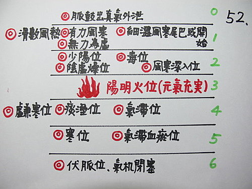

問答錄 30：過敏性鼻炎的用藥變化
作者：陳建元
老師您好：
第 1505 條治療過敏性鼻炎的3級病機第5點，肺脈心位弦細脈下，疊有一洪大脈，為寒邪久鬱化熱。請問此洪大脈是在心位或在脾位呢？

答：
兩個都會，〈圖52 〉。
第2層以虛火位為主，第3層以實火位為主，又鬱久若兼黏脈是化毒。 故：
疊有一洪大脈若在第2層，寒邪久鬱化熱以虛火為主，知母、地骨皮之類+魚腥草。
疊有一洪大脈若在第3層，寒邪久鬱化熱以實火為主，石膏 + 魚腥草。
疊有一洪大脈若在第2、3層，虛火實火都有，知母、地骨皮之類 + 石膏 + 魚腥草。
【引用請先來信告知徵求同意，若有涉及販售營利等商業行為，版權所有拷貝盜用必究。】
【藥王脈學講壇】http://blog.xuite.net/drjychen/twblog